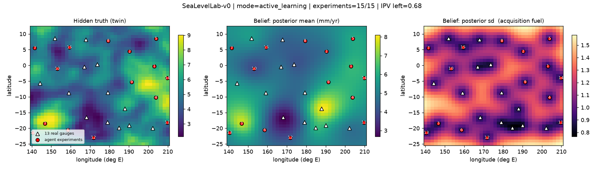

How much has the 1-in-10-year sea level already moved, and where should the next gauge go?
SeaLevelLab turns a classical Bayesian spatial model of Pacific sea level into the decision layer of an autonomous laboratory, and lets you query the result on a map.
- Data: 13 tide gauges across the tropical Pacific, monthly records from 1992 to 2025.
- Model: an R-INLA SPDE field, shown to be the same Matérn Gaussian process used as a surrogate in Bayesian optimisation.
- Loop: a digital twin, a Gymnasium environment, active learning with BoTorch, a PPO policy, and an LLM agent that calls the lab as tools.
- Risk view: a non-stationary GEV on annual maxima gives the probability that each station's old 1-in-N level is exceeded in any future year.

Method
Monthly mean sea level at each gauge is fitted with an R-INLA SPDE model. The SPDE field is a Matérn Gaussian process, so the same object becomes the surrogate of a Bayesian-optimisation loop: refit, pick the location that removes the most map uncertainty, measure, update.
For the map, annual maxima of the recorded monthly maximum are de-trended to a year-2000 baseline and fitted with a GEV distribution that shares one shape across stations. The rise rate and the GEV scale are carried across space by the same Gaussian process; the probability for any year follows in closed form, with a 90 % band from the posterior uncertainty of the rate.
Data
Monthly sea-level statistics from the Pacific Sea Level and Geodetic Monitoring Project of the Australian Bureau of Meteorology: Cook Islands, Fiji, Federated States of Micronesia, Kiribati, Marshall Islands, Nauru, Niue, Papua New Guinea, Samoa, Solomon Islands, Tonga, Tuvalu and Vanuatu.
Levels are relative to each gauge's own datum, so the comparable quantity used throughout is the rise rate, between 1.5 and 9.8 mm per year across the network.